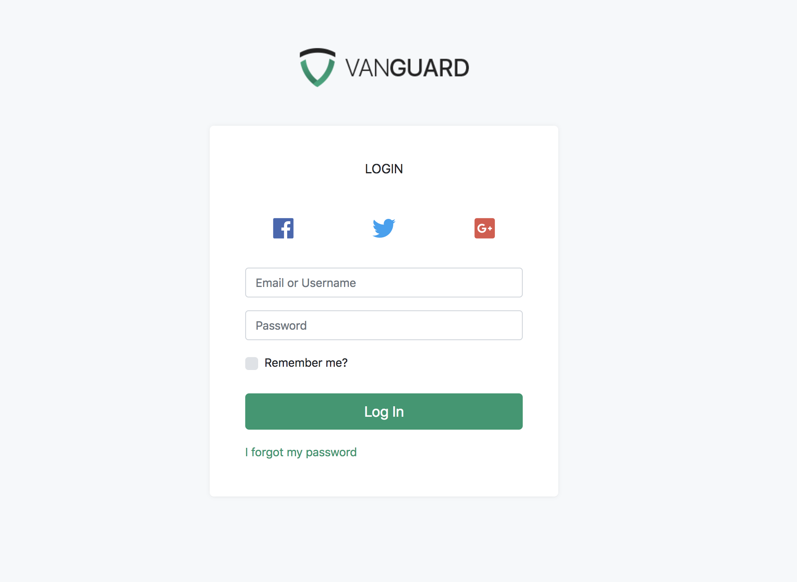
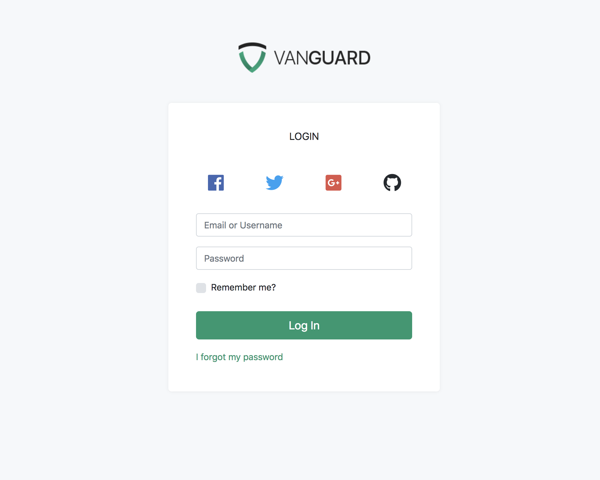

Adding Social Auth Provider
Adding Social Auth Provider
Since Vanguard utilizes Socialite package for social authentication, it's easy to add any social authentication provider that is supported by Socialite.
So, let's proceed and add GitHub authentication driver.
The Configuration File
First thing we need to do is to edit config/auth.php configuration file and add github into social providers array, like following:
'social' => [
'providers' => ['facebook', 'twitter', 'google', 'github']
],Login Page
Next step is to modify the login page and add GitHub button. The view file we need to modify is resources/views/auth/social/buttons.blade.php. We will add the following code at the end of the list:
@if (in_array('github', $socialProviders))
<div class="col-{{ $colSize }} d-flex align-items-center justify-content-center">
<a href="{{ url('auth/github/login') }}" style="color: #24292e;">
<i class="fab fa-github fa-2x"></i>
</a>
</div>
@endifIt will make our login form look like this

One thing that I don't like here is that, if you have 4 social auth providers like I do now, you are not able to see the actual text inside those buttons. Fortunately there is an easy fix for this, and all you need to do is to update the $colSize variable at the top of buttons.blade.php file to look like following:
$colSize = 6;By default it is automatically calculating how much width each social button should take by looking at the number of social providers available, but for our purposes we can simply hard-code it to 6 and make it have two buttons per row. After making this modification, the form looks like following

GitHub Keys
After modifying our login page, we can now proceed and create GitHub oAuth application. Creating the application is simple, and you need to provide your application name, website URL as well as callback URL which will be used by Vanguard.
The callback url should look like
http://yourdomain.com/auth/github/callbackOr, if you haven't removed public from your app url, then it should be present in your callback url too
http://yourdomain.com/public/auth/github/callbackAfter you create the GitHub application, you should grab your Client ID and Client Secret and create the following variables inside your .env file:
GITHUB_CLIENT_ID=<your_client_id_here>
GITHUB_CLIENT_SECRET=<your_client_secret_here>
GITHUB_CALLBACK_URI=<your_callback_uri_from_above>Socialite Configuration
Last peace of the puzzle is to let socialite know your GitHub keys and callback uri. To do so, just add the following code into your config/services.php configuration file
'github' => [
'client_id' => env('GITHUB_CLIENT_ID'),
'client_secret' => env('GITHUB_CLIENT_SECRET'),
'redirect' => env('GITHUB_CALLBACK_URI'),
],And that's it, you can now go to the login page, click that GitHub button we have created and login with your GitHub account.